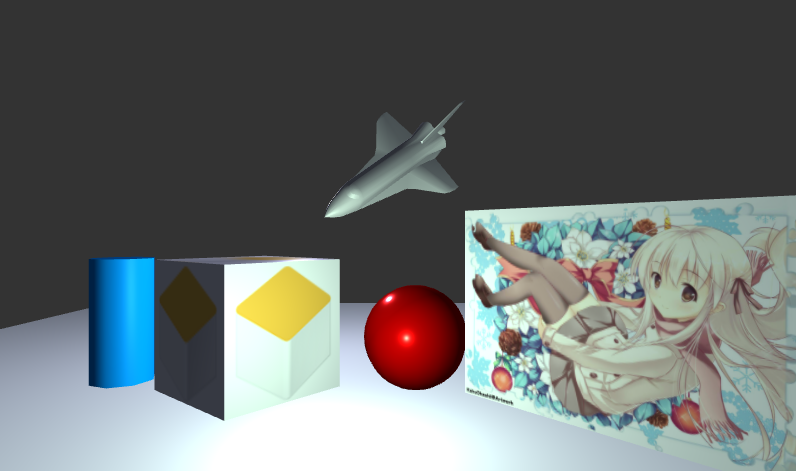
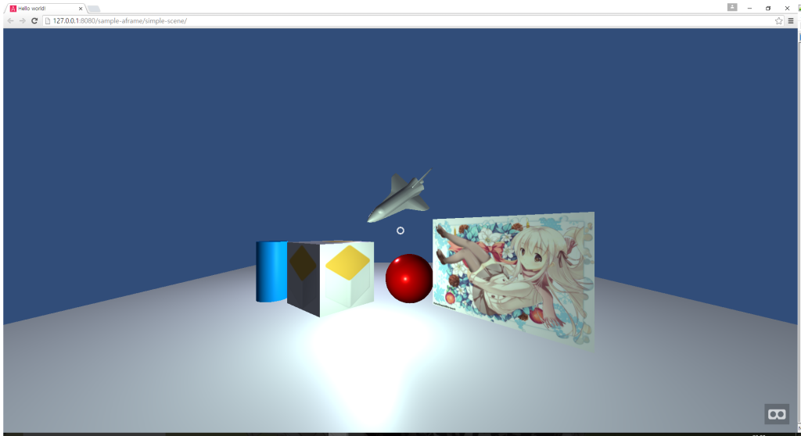

Unity Scene Web Exporter
Export Three.js or A-Frame From Unity Scene.
Unity3D Scene
Exported to Three.js

Exported to AFrame

Three.js Examples
Simple Scene
Lightmap Demo
Models
Materials
Script Variables (see consoles)
AFrame Examples
Simple Scene
How To Use / Documents